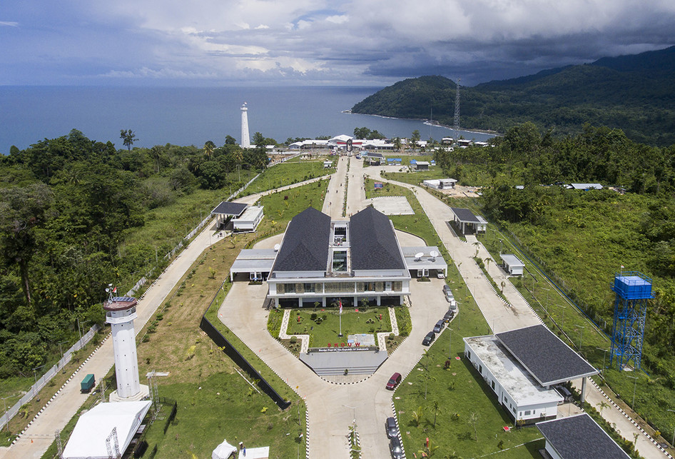
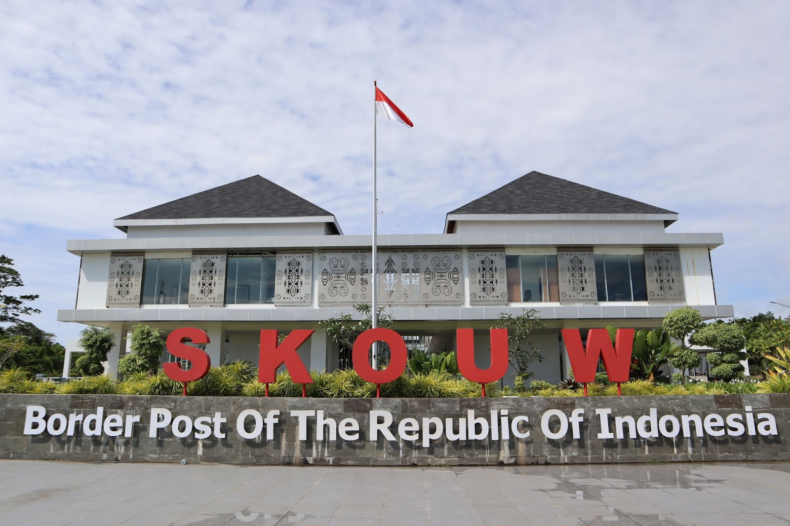
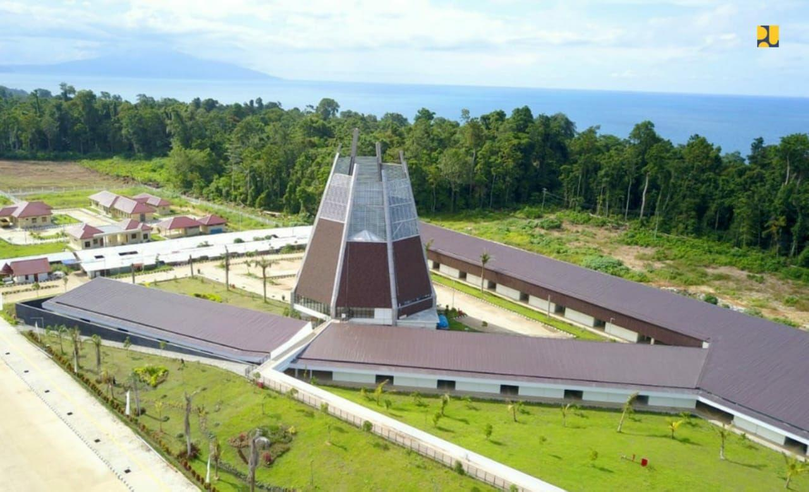

Goa Skouw
ditulis oleh Warisan Budayapada 1 April 2024
Goa Skouw adalah salah satu objek wisata alam yang terletak di kawasan perbukitan Jayapura, Papua, Indonesia. Goa ini terletak sekitar 40 kilometer dari Kota Jayapura dan dapat dijangkau dengan kendaraan darat melalui perjalanan sekitar 1,5 jam dari pusat kota. Deskripsi lengkap tentang Goa Skouw mencakup berbagai elemen, mulai dari kondisi geografisnya hingga keunikan alam dan keindahan alaminya:
Sejarah:Lokasi dan Aksesibilitas: Goa Skouw terletak di kawasan perbukitan yang dikelilingi oleh hutan tropis lebat. Meskipun terletak agak jauh dari pusat kota Jayapura, akses menuju goa ini relatif mudah dengan kendaraan darat.
Arsitektur:Kondisi Geografis: Goa Skouw terbentuk di dalam batuan kapur yang terjal. Goa ini memiliki lorong-lorong yang luas dan kompleks, dengan formasi stalaktit dan stalagmit yang indah dan mengesankan. Bagian dalam goa sering kali gelap dan memerlukan penerangan tambahan untuk dapat menikmatinya sepenuhnya.
Keunikan Alam: Salah satu keunikan Goa Skouw adalah keberadaan aliran sungai kecil yang mengalir di dalamnya. Sungai ini menambah daya tarik alam goa dengan suasana yang sejuk dan air yang jernih. Di sepanjang tepi sungai, terdapat batuan-batuan besar dan pepohonan yang rindang, menciptakan pemandangan alam yang memukau.
Keunikan Alam: Salah satu keunikan Goa Skouw adalah keberadaan aliran sungai kecil yang mengalir di dalamnya. Sungai ini menambah daya tarik alam goa dengan suasana yang sejuk dan air yang jernih. Di sepanjang tepi sungai, terdapat batuan-batuan besar dan pepohonan yang rindang, menciptakan pemandangan alam yang memukau.
Keanekaragaman Hayati: Lingkungan sekitar Goa Skouw merupakan habitat bagi berbagai spesies flora dan fauna endemik Papua. Wisatawan sering kali dapat menemui berbagai jenis burung, kupu-kupu, dan hewan-hewan kecil lainnya yang hidup di dalam hutan sekitar goa.
Aktivitas Wisata: Selain menikmati keindahan alam dan eksplorasi di dalam goa, Goa Skouw juga menawarkan berbagai aktivitas wisata lainnya seperti hiking, trekking, dan camping di sekitar kawasan perbukitan yang indah.
Aktivitas Wisata: Selain menikmati keindahan alam dan eksplorasi di dalam goa, Goa Skouw juga menawarkan berbagai aktivitas wisata lainnya seperti hiking, trekking, dan camping di sekitar kawasan perbukitan yang indah.
Keberadaan Budaya Lokal: Sebagai bagian dari Papua, Goa Skouw juga memiliki nilai budaya yang penting bagi masyarakat lokal. Beberapa suku di sekitar kawasan ini sering kali menggunakan goa sebagai tempat untuk upacara adat dan kegiatan keagamaan.